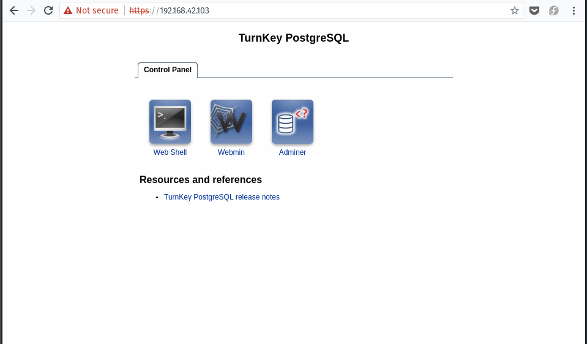
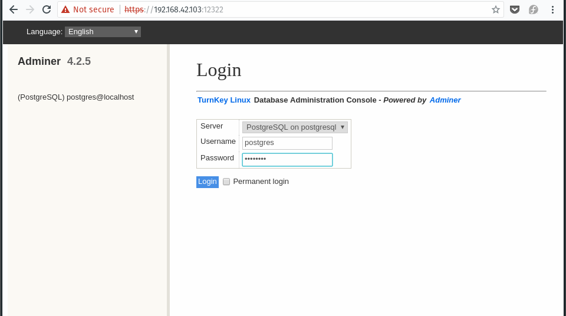
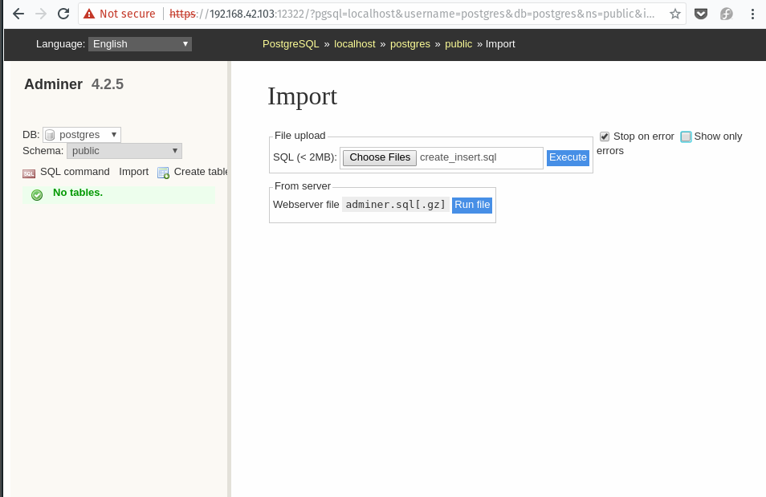
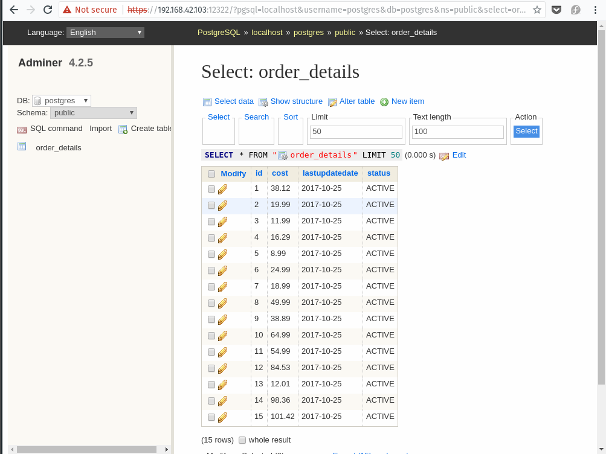

There are two repositories, one that contains a sample JDV project with helper data/scripts and another which is the AngularJS frontend.
Pull down the JDV project
git clone https://github.com/mechevarria/jdv-demo
https://github.com/mechevarria/jdv-demo-client
jdv-demo/assets/postgres/create_insert.sql
When running in a Virtual Machine, I add a second network adapter in addition to the default NAT adapter created by VirtualBox or KVM. The second adapter is host-only. With only NAT you cannot connect to your VM as a separate networked device. The second adapter allows your host machine to talk to your VM without grabbing an additional IP address. Another option is to change the default NAT to bridged, but that will not work on restricted networks.


jdv-demo/assets/postgres/create_insert.sql
